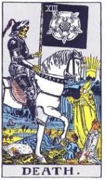
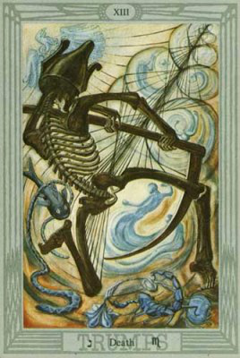
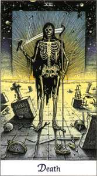
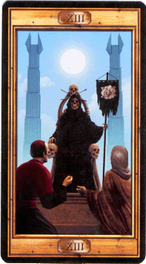
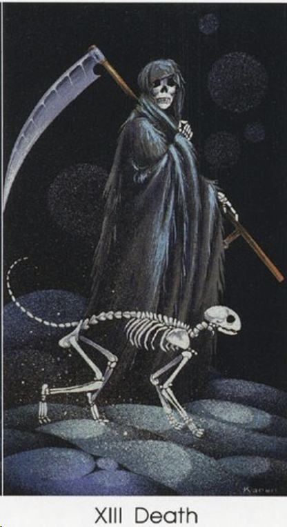
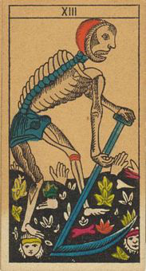
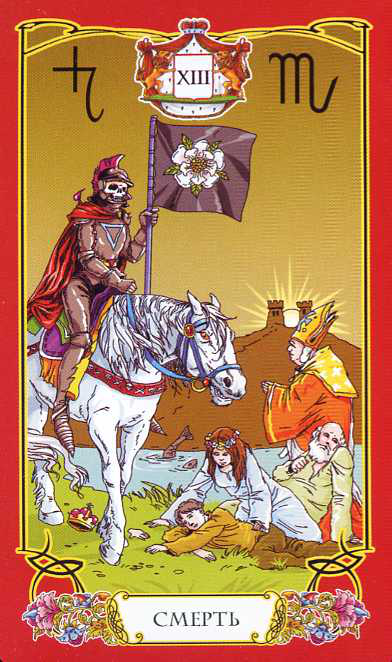
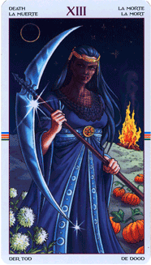
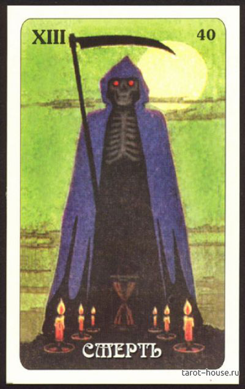
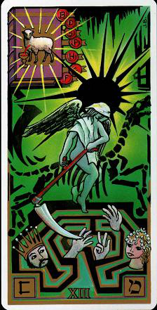
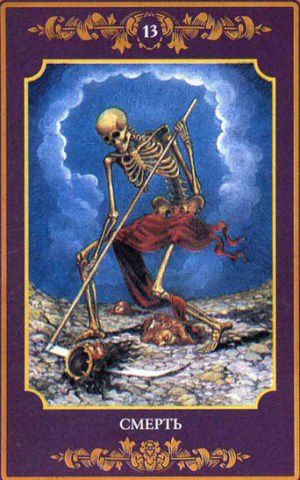
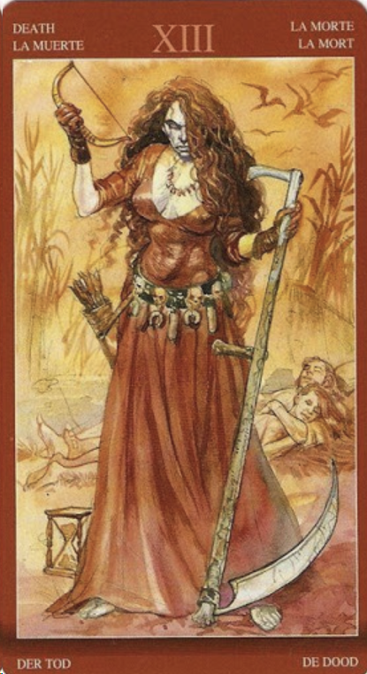
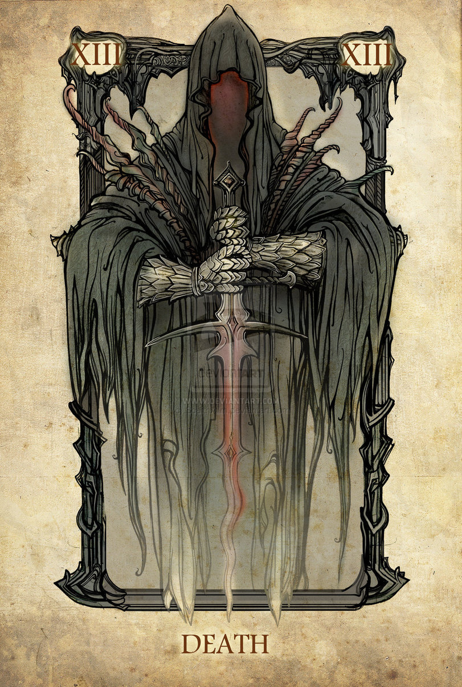
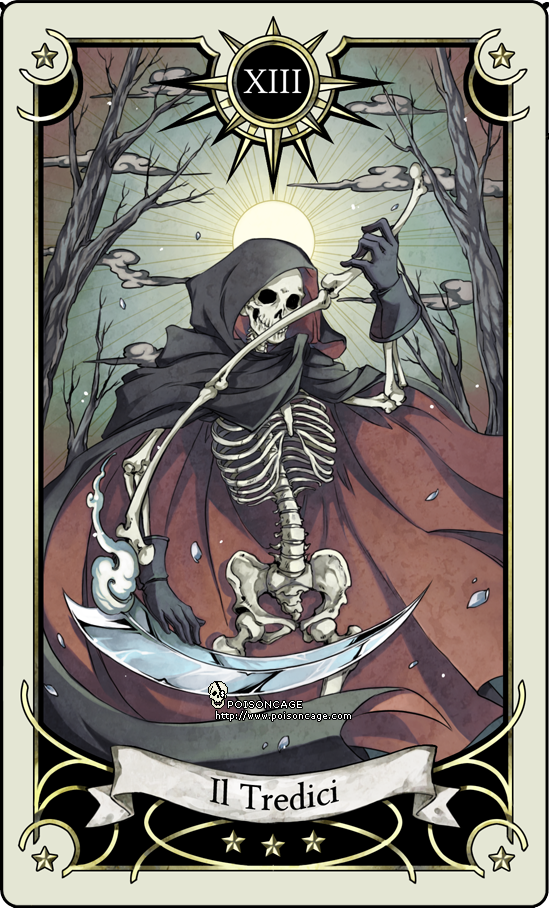
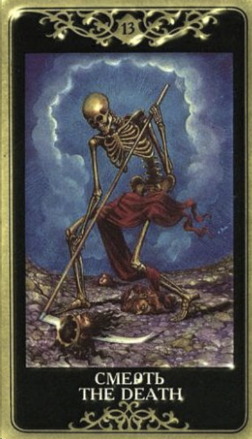
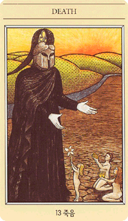
детали на карте:
На многих картах скелет (кости, череп) с косой. Скелет - это то, что уже разложилось. То есть то, что когда-то было живым, а сейчас только останки. На таро Уайта перед смертью склонились ребенок, девушка, старец и епископ, то есть любой возраст и сословия подвластны смерти, она для всех равна.
цвет: черный, белый, темно-зеленый, темно-синий, красный. Темные тона
символ:
точка (как конец)
буква:
i (расставить все точки над i)
ощущения
Умереть чтобы жить. Ярко встала моя личная жизненная ситуация, когда я пережила смерть сестры. Сестра умерла дома внезапно, я пыталась оживить ее бездыханное тело, но было уже поздно. В этот период стало для меня очень очивидно, что жизнь конечна и она может оборватся в любой момент времени. После этих событий я стала ярко чувствовать жизнь, мне все время хочется все успеть, все прожить, жизнь стала насыщенней. Осознание конечности бытия - важнейшее условие жизни! Это главный способ остоваться по настоящему живой!!! Когда чувствуешь смерть четко понимаешь, что важно, а что не важно. От чего можно отказаться сразу, что-то все равно остается важным, но потом чем ближе смерть и эти важные вещи начинаешь спокойно отпускать. Это еще карта отпускания. Сначала "отваливается" все что не нужно, начинаешь ценить то что важно, а когда ты осознал эту важность , наступает момент отпускания даже этих важных вещей, вернее не отпускание, а перестаешь за них судорожно цепляться.
Карта отпускания, освобождения, даже легкости.
ключевые слова:
отпускание
завершение
конец циклов
неотвратимость конца
освобождение
очищение
удаление ненужного
Перевернутая карта:
Трудность в отпускании, трудность в завершении какого-то дела. То что надо отпустить очегь сложно отпускается.
запах:
земли, дерева, древесный мох
астрология:
Плутон либо Скорпион
мифология:
Аид и разные с ним мифы (Орфей, Персефона)
Фразы:
Смерть - это лучшее изобретение человечества. Она - причина изменений. Она очищает старое, чтобы открыть путь новому. Стив Джобс
ритуал: вот тут хочется подключить дыхание, это подобно тому когда тебя охватывает ярость, а ты ее продышиваешь, и она уходит.